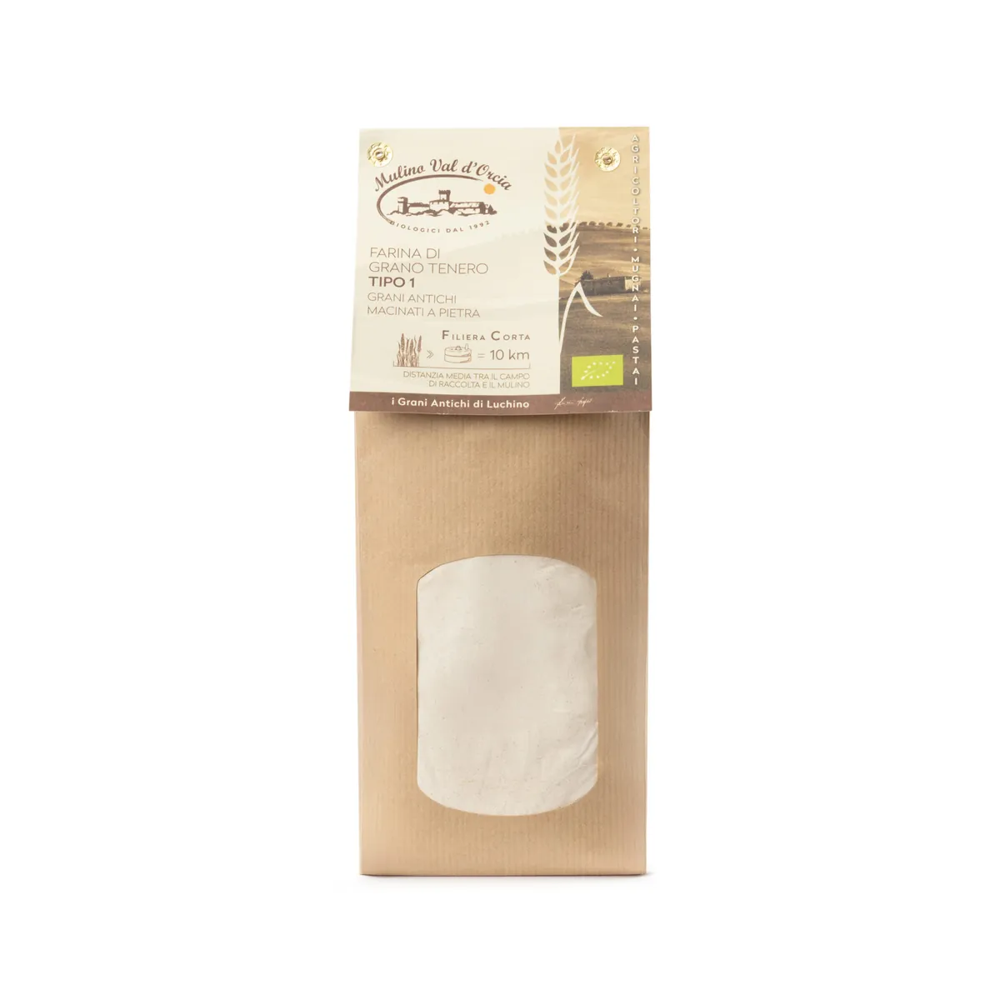
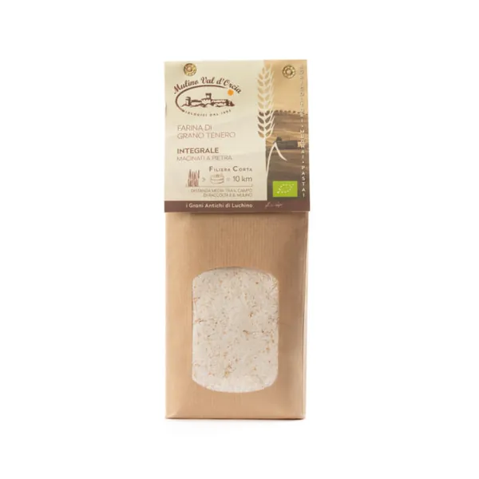

Home › Farine macinate a pietra › Farina tipo 1 grani antichi


Farine macinate a pietra · biologico
Farina tipo 1 grani antichi
da 3,50 €1 kg
1 kg 3,50 €5 kg 2,94 €/kg25 kg 62,00 € (2,48 €/kg)
Formati disponibili: 1 kg, 5 kg e 25 kg
Gratis da 60 € · arriva entro 7 gg lav. · alimenti esclusi dal reso · carta, PayPal, bonifico, contrassegno
Farina tipo 1 di grano tenero biologico da grani antichi, macinata a pietra. Per pane, pizza e dolci fatti in casa.
Scheda del prodotto
| Formati | 1 kg 3,50 € · 5 kg 2,94 €/kg · 25 kg 62,00 € (2,48 €/kg) |
|---|---|
| Ingredienti | grano tenero biologico (grani antichi) |
| Allergeni | può contenere senape |
| Macinazione | a pietra |
| Conservazione | 6 mesi, in luogo fresco e asciutto, al riparo da luce e calore |
| Certificazione | agricoltura biologica, IT BIO 009, operatore n. 0701 |
| Prodotto da | Az. Agr. Grappi Luchino, Podere Lamone 65, Pienza (SI) |
| Codice | dt007-1 |
Dal campo al sacchetto
- 01Il campo
Oltre 100 ettari a Pienza: grani antichi, farro e legumi coltivati in biologico dal 1992, a rotazione.
- 02Il mulino a pietra
Il chicco si macina intero e piano, così resta il germe con le sue vitamine e le fibre.
- 03Il pastificio
Trafilata al bronzo ed essiccata lentamente a bassa temperatura: pasta ambrata e porosa.
da 3,50 €Farina tipo 1 grani antichi
Aggiungi